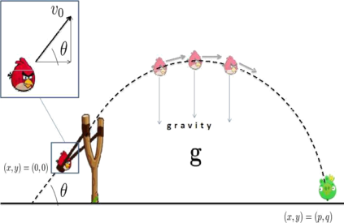
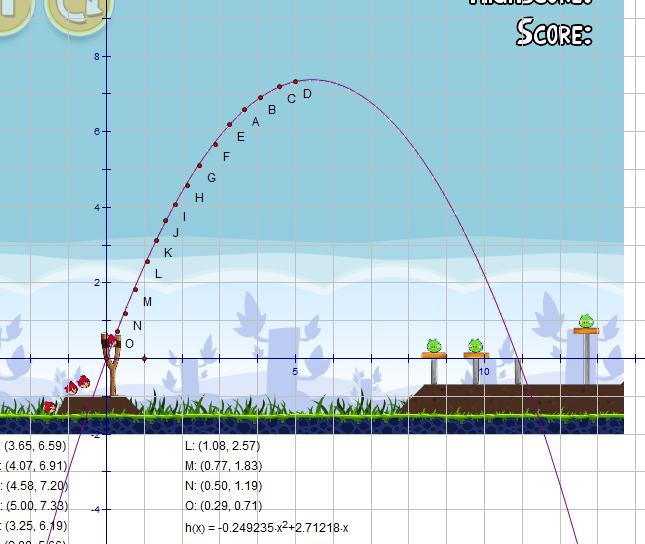
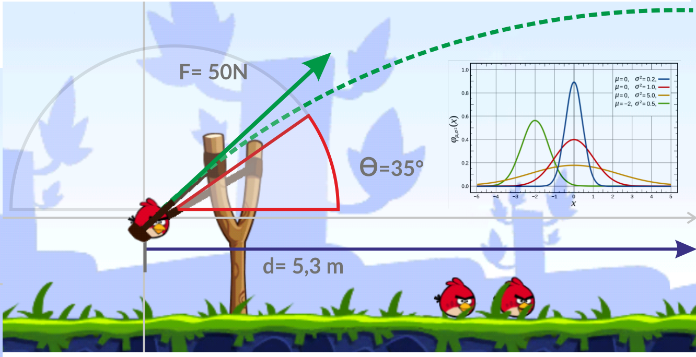

Se denomina movimiento parabólico, al movimiento realizado por cualquier objeto cuya trayectoria describe una parábola. Se corresponde con la trayectoria ideal de un proyectil que se mueve en un medio que no ofrece resistencia al avance y que está sujeto a un campo gravitatorio uniforme. El movimiento parabólico es un ejemplo de un movimiento realizado por un objeto en dos dimensiones o sobre un plano. Puede considerarse como la combinación de dos movimientos que son un movimiento horizontal uniforme y un movimiento vertical acelerado.
En realidad, cuando se habla de cuerpos que se mueven en un campo gravitatorio central (como el de La Tierra), el movimiento es elíptico. En la superficie de la Tierra, ese movimiento es tan parecido a una parábola que perfectamente podemos calcular su trayectoria usando la ecuación matemática de una parábola. La ecuación de una elipse es bastante más compleja. Al lanzar una piedra al aire, la piedra intenta realizar una elipse en uno de cuyos focos está el centro de la Tierra. Al realizar esta elipse inmediatamente choca con el suelo y la piedra se para, pero su trayectoria es en realidad un "trozo" de elipse. Es cierto que ese "trozo" de elipse es casi idéntico a un "trozo" de parábola. Por ello utilizamos la ecuación de una parábola y lo llamamos "tiro parabólico".

